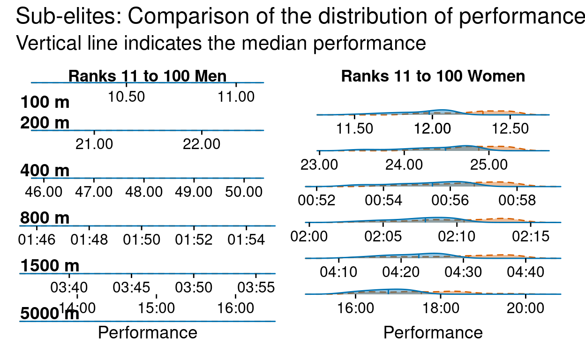

A look into how Covid has impacted the breadth and depth of athletic performances in the UK in 2020.
Covid-19 has obviously had a hugely detrimental effect on a wide range of sports this year, and at the time of writing still continues to do so. In this post, I wanted to investigate how Covid has impacted track performances in the UK compared to previous seasons. Specifically, I was interested in how the distribution of performances may differ between this season and previous seasons. I also wondered if there may be some differences between the elite athletes who may have had additional opportunities to compete this year (national championships, diamond leagues etc) compared to non-elite athletes, who may have faced the most significant reductions in competitive opportunities.
I used my poweRof10 package to collect data from www.thepowerof10.info. Specifically, I gathered the rankings for each season from 2016 to 2020 for both men and women for the following events; 100, 200, 400, 800, 1500 and 5000. If interested, you can see the code I used to collect and prepare the data by expanding the code label below.
knitr::opts_chunk$set(echo = FALSE)
library(poweRof10)
library(tidyverse)
library(furrr)
library(lubridate)
library(hms)
library(ggridges)
library(ggrepel)
library(see)
library(patchwork)
library(ggtext)
library(extrafont)
library(reactable)
# function from https://fishandwhistle.net/post/2018/modifying-facet-scales-in-ggplot2/ for tweaking facets
scale_override <- function(which, scale) {
if(!is.numeric(which) || (length(which) != 1) || (which %% 1 != 0)) {
stop("which must be an integer of length 1")
}
if(is.null(scale$aesthetics) || !any(c("x", "y") %in% scale$aesthetics)) {
stop("scale must be an x or y position scale")
}
structure(list(which = which, scale = scale), class = "scale_override")
}
CustomFacetWrap <- ggproto(
"CustomFacetWrap", FacetWrap,
init_scales = function(self, layout, x_scale = NULL, y_scale = NULL, params) {
# make the initial x, y scales list
scales <- ggproto_parent(FacetWrap, self)$init_scales(layout, x_scale, y_scale, params)
if(is.null(params$scale_overrides)) return(scales)
max_scale_x <- length(scales$x)
max_scale_y <- length(scales$y)
# ... do some modification of the scales$x and scales$y here based on params$scale_overrides
for(scale_override in params$scale_overrides) {
which <- scale_override$which
scale <- scale_override$scale
if("x" %in% scale$aesthetics) {
if(!is.null(scales$x)) {
if(which < 0 || which > max_scale_x) stop("Invalid index of x scale: ", which)
scales$x[[which]] <- scale$clone()
}
} else if("y" %in% scale$aesthetics) {
if(!is.null(scales$y)) {
if(which < 0 || which > max_scale_y) stop("Invalid index of y scale: ", which)
scales$y[[which]] <- scale$clone()
}
} else {
stop("Invalid scale")
}
}
# return scales
scales
}
)
facet_wrap_custom <- function(..., scale_overrides = NULL) {
# take advantage of the sanitizing that happens in facet_wrap
facet_super <- facet_wrap(...)
# sanitize scale overrides
if(inherits(scale_overrides, "scale_override")) {
scale_overrides <- list(scale_overrides)
} else if(!is.list(scale_overrides) ||
!all(vapply(scale_overrides, inherits, "scale_override", FUN.VALUE = logical(1)))) {
stop("scale_overrides must be a scale_override object or a list of scale_override objects")
}
facet_super$params$scale_overrides <- scale_overrides
ggproto(NULL, CustomFacetWrap,
shrink = facet_super$shrink,
params = facet_super$params
)
}
### get data ###
years <- c(2016:2020)
events <- c("100", "200", "400", "800", "1500", "5000")
gender <- c("M", "W")
# grid <- expand_grid(years, events, gender) %>%
# as.list()
#
# plan(multisession)
# all_rankings <- future_pmap_dfr(grid, ~get_event(event = ..2, gender = ..3, year = ..1), .progress = TRUE)
# plan(sequential)
# save(all_rankings, file = "rankings.rds")
options(digits.secs=2)
load("rankings.rds")
# Function to get womens 400 performances in 61.00 format to 1:01.00 format
time_cleaner <- function(time) {
date <- as.numeric(time) * 1000
res <- as.POSIXct.numeric(date/1000, origin = '1970-01-01', format = "%OS")
format(res, format = '%M:%OS')
}
clean_rankings <- all_rankings %>%
select(rank, perf, input_year, event, gender, date, name) %>%
filter(event %in% c("100", "200", "400", "800", "1500", "5000")) %>%
filter(rank != "") %>%
mutate(event = factor(event, levels = c("100", "200", "400", "800", "1500", "5000")),
rank = as.numeric(rank),
perf = str_trim(perf),
input_year = factor(input_year, levels = c("2016", "2017", "2018", "2019", "2020"))) %>%
mutate(perf = if_else(event == "400" & str_starts(perf, "6"), time_cleaner(perf), perf)) %>%
mutate(perf_x = case_when(event %in% c("800", "1500") ~paste0("00:0", perf),
event %in% c("200", "400") & nchar(perf) <= 5 ~paste0("00:00:", perf),
event == "100" ~ ifelse(nchar(perf) < 5,
paste0("00:00:0", perf),
paste0("00:00:", perf)),
TRUE ~ paste0("00:", perf))) %>%
mutate(perf_x = parse_hms(perf_x),
perf_x_sec = round(seconds(perf_x), digits = 2),
perf_x_sec = round(seconds_to_period(perf_x_sec), 2)) %>%
mutate(time = as_datetime(perf_x_sec))
Figure 1 shows the number of athletes on the ranking list for each event over the last five seasons.
df <- clean_rankings %>%
group_by(gender, event, input_year) %>%
mutate(gender = ifelse(gender == "M", "Men", "Women"),
event = paste(event, "m")) %>%
count()
ggplot(df, aes(x = input_year, y = n, group = event, colour = event, label = event)) +
geom_line() +
geom_point() +
scale_color_brewer(palette = "Paired") +
scale_y_continuous(breaks = c(250, 500, 750, 1000, 1250, 1500)) +
scale_x_discrete(expand = expansion(add = c(0.3, 1))) +
geom_hline(yintercept = c(250, 500, 750, 1000, 1250, 1500), linetype = "dashed", alpha = 0.2) +
labs(x = "Season",
y = "Count",
title = "Number of atheletes on the rankings list over the last \nfive seasons for different events") +
geom_text_repel(
data = subset(df, input_year == "2020"),
nudge_x = 0.50,
direction = "y",
hjust = -1.5,
segment.size = 0.2,
size = 5) +
theme_modern(base_family = "roboto") +
facet_wrap(gender ~.) +
theme(legend.position = "none",
plot.title = element_text(size = 18),
strip.text = element_text(size = 14, face = "bold"))
Figure 1: Number of athletes on the rankings
There is a fairly similar trend for both men and women, although women’s 5K does stand out as being particularly low, compared to men’s 5k in previous seasons. Unsurprisingly, we also see a large drop off in the number of athletes on the rankings list in 2020, which is to be expected given the restrictions over the summer resulting in fewer opportunities to compete. There is a similar trend for both men and women with the middle distance events having the most performances, followed by the sprints events, with the 5000 m resulting in the fewest performances.
Table 1 compares the number of performances in 2019 and 2020 and highlights the percentage decrease between the two seasons. We see a similar trend for both men and women, with 5k performances suffering the greatest decrease (down 91% for men and 87% for women) and the 800 m with the smallest decrease (down 48% for men and 53% for women) out of the events studied.
library(reactable)
summary_table <- df %>%
filter(input_year %in% c("2019", "2020")) %>%
pivot_wider(names_from = input_year, values_from = n) %>%
mutate(perc = (`2019` - `2020`) / `2019`) %>%
ungroup()
reds <- function(x) rgb(colorRamp(c("#ffcccb", "#ff1919"))(x), maxColorValue = 255)
summary_table %>%
filter(gender == "Men") %>%
select(-gender) %>%
bind_cols(., summary_table %>%
filter(gender == "Women") %>%
select(-gender, -event), .name_repair = janitor::make_clean_names) %>%
mutate(event = as.numeric(str_remove(event, " m"))) %>%
reactable(defaultSorted = "perc",
defaultSortOrder = "desc",
columns = list(
perc = colDef(name = "% Decrease",
minWidth = 120,
format = colFormat(percent = TRUE, digits = 1),
style = function(value) {
normalized <- (value - min(summary_table$perc)) /
(max(summary_table$perc) - min(summary_table$perc))
color <- reds(normalized)
list(background = color, color = "#000")}),
perc_2 = colDef(name = "% Decrease",
minWidth = 120,
format = colFormat(percent = TRUE, digits = 1),
style = function(value) {
normalized <- (value - min(summary_table$perc)) /
(max(summary_table$perc) - min(summary_table$perc))
color <- reds(normalized)
list(background = color , color = "#000")}),
x2019 = colDef(name = "2019"),
x2020 = colDef(name = "2020"),
x2019_2 = colDef(name = "2019"),
x2020_2 = colDef(name = "2020"),
event = colDef(name = "Event (m)")),
defaultColDef = colDef(align = "center"),
columnGroups = list(
colGroup(name = "Men", columns = c("x2019", "x2020", "perc")),
colGroup(name = "Women", columns = c("x2019_2", "x2020_2", "perc_2"))
))
So we already know that there have been far fewer performances this year, but of those performances that have been recorded, how to they compare to the kinds of performances we would see in a “normal” year?
To do this, I first calculated the average performance for each rank over the 2016 to 2019 seasons, and then compared the distribution of these average performances to those we’ve seen this year. I’ve coloured the average performance in this colour and highlighted 2020 performances in this colour. I have also split the rankings into two groups; “Elite”, defined as the top 10 athletes and “Sub elite”, defined as those athletes occupying ranks 11-100.
The y axis on the figure is the kernel density estimate, which is a smoothed version of the histogram. For these plots, I’ve removed the y axis label as I wanted the focus to be on the shape of the density estimate and position relative the the x-axis (performance) for the two groups (average of previous years vs this year), rather than the actual density estimate as I think comparing the shape and position of the curves tells the better story.
rank_plots <- clean_rankings %>%
mutate(input_year = fct_rev(input_year),
covid_year = ifelse(input_year == "2020", "covid", "pre_covid")) %>%
select(input_year, time, rank, event, gender, covid_year) %>%
group_by(gender, event, input_year) %>%
mutate(rank_group = case_when(rank %in% c(1:10) ~ "top_10",
rank %in% c(11:100) ~ "11_to_100",
rank %in% c(101:max(rank)) ~ "101_to_max"),
rank_group = factor(rank_group, levels = c("top_10", "11_to_100", "101_to_max"))) %>%
ungroup() %>%
group_by(event, gender, covid_year, rank, rank_group) %>%
mutate(Performance = as_datetime(mean(as.POSIXct(time)))) %>%
ungroup() %>%
mutate(event = paste(event, "m"),
event = factor(event, levels = c("100 m", "200 m", "400 m", "800 m", "1500 m", "5000 m")),
lab = "wow")
Figure 2 shows the distribution of performances for the top 10 athletes. Interestingly we see that the sprint events (100, 200 and to a slightly lesser extent 400) seem to have slower performances in 2020, compared to the average over 2016-2019 (distributions shifted to the right indicated slower performances). In comparison, the middle distance events (800, 1500) seem to have equivalent (and in some cases even slightly better) performances in 2020 compared to average from previous season.
rank_plots %>%
filter(rank_group == "top_10" & gender == "M") %>%
ggplot(aes(x = Performance,
y = lab,
fill = covid_year,
color = covid_year,
linetype = covid_year,
alpha = 0.3)) +
scale_fill_manual(values = c("#009E73", "#0072B2")) +
scale_color_manual(values = c("#009E73", "#0072B2")) +
scale_x_datetime(date_labels = "%M:%S", expand = c(0,0)) +
scale_y_discrete(expand = c(0, 0)) +
scale_linetype_manual(values = c("dashed", "solid")) +
geom_density_ridges(quantile_lines = TRUE, quantiles = 2) +
facet_wrap_custom(event~., scales = "free", ncol = 1, scale_overrides = list(
scale_override(1, scale_x_datetime(breaks = as_datetime(c("1970-01-01 00:00:10.00",
"1970-01-01 00:00:10.50",
"1970-01-01 00:00:11.00")),
date_labels = "%OS")),
scale_override(2, scale_x_datetime(date_labels = "%OS")),
scale_override(3, scale_x_datetime(date_labels = "%OS")))) +
labs(subtitle = "Top 10 Men") +
coord_cartesian(clip = "off") +
theme_ridges(grid = FALSE,
center_axis_labels = TRUE,
font_family = "roboto") +
theme(legend.position = "none",
axis.title.y = element_blank(),
axis.text.y = element_blank(),
plot.subtitle = element_text(hjust = 0.5, size = 13),
strip.text = element_text(size = 14, face = "bold", hjust = 0),
strip.background = element_blank()) -> p1
rank_plots %>%
filter(rank_group == "top_10" & gender == "W") %>%
ggplot(aes(x = Performance,
y = lab,
fill = covid_year,
color = covid_year,
linetype = covid_year,
alpha = 0.3)) +
geom_density_ridges(quantile_lines = TRUE, quantiles = 2, alpha = 0.4) +
scale_x_datetime(date_labels = "%M:%S", expand = c(0,0)) +
scale_y_discrete(expand = c(0, 0)) +
scale_fill_manual(values = c("#009E73", "#0072B2")) +
scale_color_manual(values = c("#009E73", "#0072B2")) +
scale_linetype_manual(values = c("dashed", "solid")) +
facet_wrap_custom(event~., scales = "free", ncol = 1, scale_overrides = list(
scale_override(1, scale_x_datetime(breaks = as_datetime(c("1970-01-01 00:00:11.00",
"1970-01-01 00:00:11.50",
"1970-01-01 00:00:12.00")),
date_labels = "%OS")),
scale_override(2, scale_x_datetime(date_labels = "%OS")),
scale_override(3, scale_x_datetime(date_labels = "%OS")))) +
labs(subtitle = "Top 10 Women") +
coord_cartesian(clip = "off") +
theme_ridges(grid = FALSE,
center_axis_labels = TRUE,
font_family = "roboto") +
theme(legend.position = "none",
axis.title.y = element_blank(),
axis.text.y = element_blank(),
plot.subtitle = element_text(hjust = 0.5, size = 13),
strip.text = element_blank(),
strip.background = element_blank()) -> p2
p1 + p2 +
plot_annotation(title = "Comparison of the distribution of performances for <b><span style = 'color:#0072B2;'>2016-2019 </span></b> and <b><span style = 'color:#009E73;'>2020</span></b>.",
subtitle = "Vertical line indicates the median performance",
theme = theme(plot.title = element_markdown(size = 18),
plot.subtitle = element_text(size = 16)))
Figure 2: Elite performance distributions for males and females and different events.
Figure 3 is the same plot as above, but those those athletes ranked 11-100. We see a similar trend in the sprint events, however the middle distance events also show a shift to the right, indicating slower than avergage performances for these ranks in 2020.

Figure 3: Sub-elite performance distributions for males and females and different events.
From this small investigation there are a few key things that stood out to me. Firstly, elite middle distance runners had an excellent year (performance wise) in 2020. This was true for both men and women. In contrast, sprint events were considerably down on their average performances in 2020. My personal take on this is that middle distance runners may have faired better during periods of lockdown compared to sprinters who typically (I may be stereotyping here…!) make greater use of indoor facilities and therefore may have not been able to prepare as they normally would for the competitive season.
For sub-elite athletes (ranks 11 to 100), a consistent trend was apparent across all events, with performances in 2020 being down on the average performance over the last few seasons. This is probably due to a number of factors including, limited access to training facilities and far fewer opportunities to compete, not to mention all the other stresses that 2020 has brought.
While this might all sound a little pessimistic, I know athletes are a hardy bunch and fully expect some exceptional performances in all events next year. The limited opportunities to compete this year, while certainly frustrating, may actually be a benefit in the long run… After all, a rest is sometimes as good as a run, and maybe this extended break from intense competition will be a blessing in disguise!
Thanks for reading!
As always, big thanks to the powerof10 team who provide an invaluable source for athletes and fans alike!